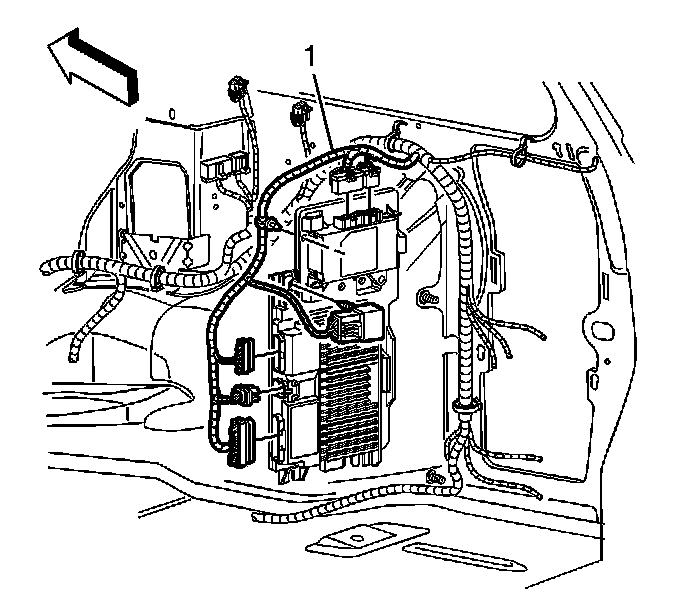
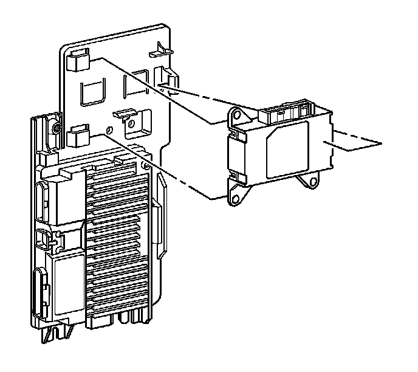

Rear Body Control Module Replacement (Export)
Rear Body Control Module Replacement (Export)
Removal Procedure
1. Remove the right rear body side trim. Refer to Body Side Rear Trim Panel Replacement (w/TB5) (Service and Repair)Body Side Rear Trim Panel Replacement (w/o TB5) (Service and Repair) .

2. Disconnect the electrical connectors (1) from the rear body control module.

3. Remove the module from the mounting bracket.
Installation Procedure
1. Install the module to the mounting bracket.
2. Connect the electrical connectors (1).
3. Install the right rear body side trim. Refer to Body Side Rear Trim Panel Replacement (w/TB5) (Service and Repair)Body Side Rear Trim Panel Replacement (w/o TB5) (Service and Repair) .
4. Reprogram the module. Refer to Control Module References (Programming and Relearning) .